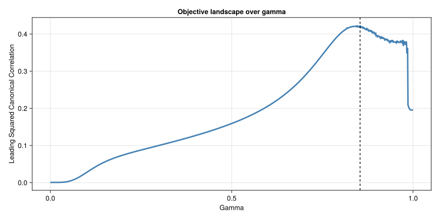
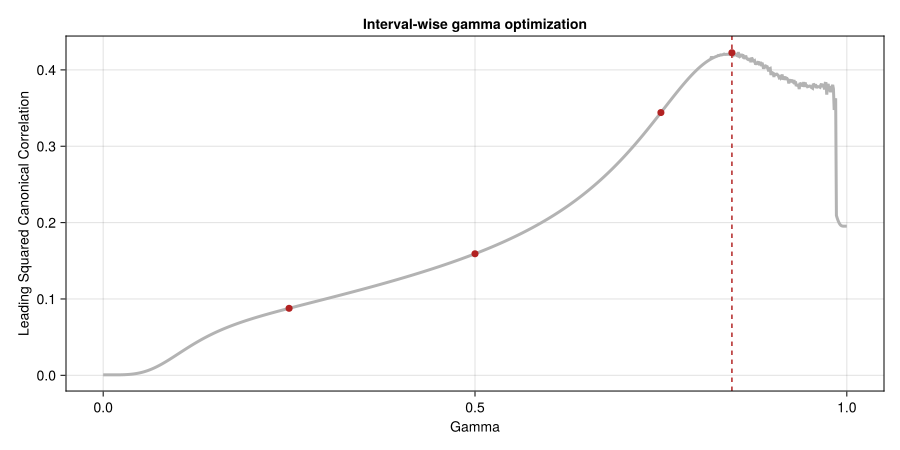

Fit
Model fitting in CPPLS is performed through StatsAPI.fit together with a CPPLSSpec. The same interface is used for both regression and discriminant analysis. In both settings, the fit can optionally incorporate obs_weights and Y_aux. Observation weights control how strongly individual samples contribute to the model, whereas auxiliary response information can shape the supervised projection without changing the primary prediction target. In discriminant analysis (DA), observation weights are especially useful when classes are imbalanced. Together with gamma, these arguments are among the main levers for tailoring a CPPLS model to the structure of a particular dataset.
The gamma argument supports three distinct workflows. A fixed scalar such as 0.5 uses the same value for every latent variable. A grid such as 0:0.01:1 evaluates a set of fixed candidate values and keeps the one with the largest leading canonical correlation for each latent variable. An interval specification such as [(0.1, 0.3), (0.7, 0.9)] performs one bounded search inside each closed interval, so both endpoints are included in the search, and then keeps the best interval-wise optimum. The package ships with the helper function intervalize, which converts a grid into a list of adjacent intervals, for example intervalize(0:0.01:1).
That distinction matters for diagnostics. The stored values returned by gamma_search_gammas(model, lv) and gamma_search_rhos(model, lv) contain one point per candidate supplied to gamma. For a grid, that gives a sampled view of the objective curve across gamma. For intervalize(...), it gives one selected optimum per interval, which is useful for comparing intervals but is not itself a dense landscape trace. If the goal is to visualize the shape of the gamma objective, prefer a grid. If the goal is robust optimization over subranges, prefer intervals.
The following worked example uses a synthetic discriminant-analysis dataset. It first focuses on choosing gamma in an otherwise plain CPPLS-DA fit, and only afterwards introduces observation weights and auxiliary responses.
Choosing Gamma
In practice, it is useful to separate two questions:
- What does the objective look like across gamma?
- Which gamma should the model actually use?
For the first question, fit a model with a grid such as gamma=0:0.01:1 and plot gamma_search_gammas(model, 1) against gamma_search_rhos(model, 1). This yields a sampled overview of the landscape for the first latent variable and makes it easier to see broad maxima, flat regions, or multiple promising ranges.
For the second question, pass explicit intervals such as gamma=intervalize(0:0.01:1). This asks CPPLS to optimize once inside each adjacent closed interval and then choose the best interval-wise optimum. Plotting the stored search values is still possible in that case, but the result should be interpreted as one point per interval rather than as a continuous landscape.
Example: Synthetic DA Workflow
In this example, we use a synthetic dataset that ships with the package. The dataset contains 100 samples: 10 belong to the minority class minor and 90 to the majority class major. Accordingly, the predictor matrix has 100 rows and 14 columns, representing 14 measured traits. The classes differ across these traits, which makes the dataset useful for illustrating how different gamma choices affect a CPPLS-DA model. Later in the section, we return to the same dataset to discuss class imbalance and the auxiliary response block Y_aux, but we keep those confounding ingredients out of the initial gamma discussion so that the role of gamma stays easy to see.
The dataset was constructed so that a plain PCA score plot is dominated by nuisance structure, whereas CPPLS-DA recovers the class contrast more clearly. That makes it a useful benchmark for both gamma selection and, later, for showing how observation weighting and auxiliary responses change the fitted score space.
In addition to CPPLS, the example uses JLD2 to load the dataset from disk, MultivariateStats to compute the PCA baseline, Colors to convert the auxiliary variable into grayscale values in the later auxiliary-response plots, Statistics to orient the latent variables consistently across plots, and CairoMakie to render static figures. The Julia Pkg documentation explains how to install registered packages in the Getting Started section.
using CPPLS
using JLD2
using MultivariateStats
using Statistics
using CairoMakie
using Colors
sample_labels, X, classes, Y_aux = load(
CPPLS.dataset("synthetic_cppls_da_dataset.jld2"),
"sample_labels",
"X",
"classes",
"Y_aux"
)
backend = :makie # use Makie to render all score plots
figure_kwargs = (; size=(900, 600)) # score plot dimensions
function orient_scores(scores, classes; reference_class="major")
oriented = copy(scores)
reference_idx = classes .== reference_class
for lv in axes(oriented, 2)
if mean(oriented[reference_idx, lv]) < 0
oriented[:, lv] .*= -1
end
end
oriented
endFor comparison, we first fit a Principal Component Analysis (PCA) baseline to inspect the separation of the two classes based on variance alone.
M = fit(PCA, X'; maxoutdim=2)
scores_pca = permutedims(predict(M, X'))
pca_plt = scoreplot(
sample_labels,
classes,
scores_pca;
backend=backend,
figure_kwargs=figure_kwargs,
title="PCA scores",
xlabel="Principal Component 1",
ylabel="Principal Component 2",
default_marker=(; markersize=14)
)
save("pca.svg", pca_plt)
In this synthetic dataset, the first two principal components are not optimized for class discrimination, so a substantial part of the visible structure reflects nuisance variation rather than the class contrast of interest.
CPPLS-DA With a Fixed Gamma of 0.5
We begin with a plain CPPLS-DA fit that ignores observation weights and auxiliary responses. Setting gamma=0.5 gives a balanced compromise between predictor variance and predictor-response correlation and is a useful first reference point.
spec = CPPLSSpec(
n_components=2,
gamma=0.5,
analysis_mode=:discriminant
)
m_plain = fit(
spec,
X,
classes;
sample_labels=sample_labels
)
scores_plain = orient_scores(X_scores(m_plain)[:, 1:2], classes)
cppls_plain_plt = scoreplot(
sample_labels,
classes,
scores_plain;
backend=backend,
figure_kwargs=figure_kwargs,
title="CPPLS-DA scores with gamma = 0.5",
default_marker=(; markersize=14)
)
save("cppls_plain.svg", cppls_plain_plt)
Fitting CPPLS-DA directly to the class labels already yields a more class-oriented score space than a variance-only baseline. Because gamma is fixed at 0.5, however, this fit does not tell us whether nearby gamma values would perform similarly or whether a different region of the parameter space might be preferable. To get a better overview of how the leading squared canonical correlation responds to different values of gamma, we next fit a model over a dense grid of gamma values, here using 0:0.001:1.
Gamma landscape from a grid
grid_spec = CPPLSSpec(
n_components=1,
gamma=0:0.001:1,
analysis_mode=:discriminant
)
grid_model = fit(
grid_spec,
X,
classes
)
grid_gammas = gamma_search_gammas(grid_model, 1)
grid_rhos = gamma_search_rhos(grid_model, 1)
selected_grid_gamma = gamma(grid_model)[1]
println("Best gamma: ", selected_grid_gamma)
i = findfirst(==(selected_grid_gamma), grid_gammas)
println("Associated rho^2: ", grid_rhos[i])
gamma_grid_fig = Figure(size=(900, 450))
gamma_grid_ax = Axis(
gamma_grid_fig[1, 1],
xlabel="gamma",
ylabel="leading squared canonical correlation",
title="Gamma landscape from a fixed grid"
)
lines!(gamma_grid_ax, grid_gammas, grid_rhos; color=:steelblue, linewidth=3)
vlines!(gamma_grid_ax, [selected_grid_gamma]; color=:black, linestyle=:dash)
save("gamma_grid.svg", gamma_grid_fig)Best gamma: 0.854
Associated rho^2: 0.42324038133035485
Using a grid gives a sampled view of the objective for the first latent variable. The dashed line marks the gamma value ultimately selected from that grid. This kind of plot is the right tool when the main goal is to understand the overall shape of the search landscape.
Gamma optimization over intervals
If the goal is optimization rather than visualization, it can be more efficient to search over a smaller number of intervals. The right choice depends on the $\rho$ landscape, which in turn depends on the data. If the landscape is very rugged, a finer interval partition may be needed to increase the chance of finding the global maximum. If the landscape mainly shows a single broad optimum, a smaller number of intervals may be sufficient.
In the next fit, we divide [0, 1] into adjacent subranges with intervalize(0:0.25:1) and optimize once inside each of those intervals.
interval_spec = CPPLSSpec(
n_components=1,
gamma=intervalize(0:0.25:1),
analysis_mode=:discriminant
)
interval_model = fit(
interval_spec,
X,
classes
)
interval_gammas = gamma_search_gammas(interval_model, 1)
interval_rhos = gamma_search_rhos(interval_model, 1)
selected_interval_gamma = gamma(interval_model)[1]
println("Best gamma: ", selected_interval_gamma)
i = findfirst(==(selected_interval_gamma), interval_gammas)
println("Associated rho^2: ", interval_rhos[i])
gamma_interval_fig = Figure(size=(900, 450))
gamma_interval_ax = Axis(
gamma_interval_fig[1, 1],
xlabel="gamma",
ylabel="leading squared canonical correlation",
title="Interval-wise gamma optimization"
)
lines!(gamma_interval_ax, grid_gammas, grid_rhos; color=:grey70, linewidth=3)
scatter!(gamma_interval_ax, interval_gammas, interval_rhos; color=:firebrick, markersize=10)
vlines!(gamma_interval_ax, [selected_interval_gamma]; color=:firebrick, linestyle=:dash)
save("gamma_intervals.svg", gamma_interval_fig)Best gamma: 0.8454915028125263
Associated rho^2: 0.42248730444738436
In this plot, the grey curve is the same grid-based landscape as before, the red points show the single optimum retained from each interval, and the dashed line marks the overall winner among those interval-wise optima. The interval-wise optimized gamma is close to the one found by the very dense grid, but it is not identical, and the dense grid search yields a marginally larger rho^2 value. Whether that difference matters in practice depends on the analysis. A full dense grid search may be too expensive, especially inside cross-validation.
Observation weights and auxiliary responses
The same dataset also contains two ingredients that were deliberately ignored in the gamma examples above: strong class imbalance and an auxiliary response block Y_aux. Those become relevant once the focus shifts from choosing gamma to understanding how the fitted score space changes when class prevalence is rebalanced and auxiliary supervision is modeled explicitly.
For the remainder of this section, we keep gamma=0.5 fixed so that the main differences between the fits come from the inclusion or omission of observation weights and auxiliary responses rather than from changes in gamma. For visual comparability across plots, we orient each latent variable so that the mean score of class major is positive; this only fixes the sign indeterminacy of the latent variables and does not change the fit itself.
We now add inverse-frequency observation weights. This gives the two classes the same total influence on the fitted model and reduces the bias introduced by unequal class sizes.
m_weighted = fit(
spec,
X,
classes;
obs_weights=invfreqweights(classes), # give both classes equal total weight
sample_labels=sample_labels
)
scores_weighted = orient_scores(X_scores(m_weighted)[:, 1:2], classes)
cppls_weighted_plt = scoreplot(
sample_labels,
classes,
scores_weighted;
backend=backend,
figure_kwargs=figure_kwargs,
title="CPPLS-DA scores from an inverse-frequency-weighted model",
default_marker=(; markersize=14)
)
save("cppls_weighted.svg", cppls_weighted_plt)
Applying inverse-frequency weights makes the discriminant structure more symmetric. In this example, the main effect is not a larger distance between the groups, but rather a recentering and slight rotation of the latent space so that the class contrast is less biased by class prevalence.
At this point, the class separation already looks convincing. In this dataset, however, it is driven not only by class-related variation but also by structured variation associated with auxiliary responses. To address that, we include Y_aux in addition to the observation weights. This changes how the latent variables are estimated. Instead of forcing all supervised structure into the class contrast, the model can also represent variation associated with auxiliary responses.
m_weighted_yaux = fit(
spec,
X,
classes;
obs_weights=invfreqweights(classes), # give both classes equal total weight
Y_aux=Y_aux, # model auxiliary responses explicitly
sample_labels=sample_labels
)
scores_weighted_yaux = orient_scores(X_scores(m_weighted_yaux)[:, 1:2], classes)
cppls_weighted_yaux_plt = scoreplot(
sample_labels,
classes,
scores_weighted_yaux;
backend=backend,
figure_kwargs=figure_kwargs,
title="CPPLS-DA scores from an inverse-frequency-weighted model with auxiliary responses",
default_marker=(; markersize=14)
)
save("cppls_weighted_yaux.svg", cppls_weighted_yaux_plt)
The visible class separation may not have increased much, but it is now more likely to reflect information that is genuinely related to class membership rather than variation carried by a correlated covariate. To make that difference easier to see, we plot the last two score sets again, now shading each point by its auxiliary response value.
aux = vec(Y_aux[:, 1])
aux_min, aux_max = extrema(aux)
point_colors = Gray.(0.1 .+ 0.8 .* ((aux .- aux_min) ./ (aux_max - aux_min)))
cppls_weighted_shaded_plt = scoreplot(
sample_labels,
fill("samples", length(sample_labels)),
scores_weighted;
backend=backend,
figure_kwargs=figure_kwargs,
title="CPPLS-DA scores from an inverse-frequency-weighted model " *
"shaded by auxiliary values",
show_legend=false,
default_scatter=(; color=point_colors),
default_marker=(; markersize=14)
)
save("cppls_weighted_shaded.svg", cppls_weighted_shaded_plt)
cppls_weighted_yaux_shaded_plt = scoreplot(
sample_labels,
fill("samples", length(sample_labels)),
scores_weighted_yaux;
backend=backend,
figure_kwargs=figure_kwargs,
title="CPPLS-DA scores from an inverse-frequency-weighted model with auxiliary responses " *
"shaded by auxiliary values",
show_legend=false,
default_scatter=(; color=point_colors),
default_marker=(; markersize=14)
)
save("cppls_weighted_yaux_shaded.svg", cppls_weighted_yaux_shaded_plt)

In the first shaded score plot, fitted without auxiliary response information, the grayscale values are not randomly distributed across the score space. Instead, they are arranged roughly along the first latent dimension. This indicates that auxiliary signal correlated with class membership has leaked into the apparent class separation.
With the auxiliary response information included, as shown in the second plot, the auxiliary structure is much less pronounced in the fitted scores, as indicated by the grayscale values being more evenly distributed across the plot.
Overall, the example shows how gamma can be explored and optimized, how observation weights can rebalance class influence, and how auxiliary responses can help separate auxiliary structure from the signal that is genuinely relevant to group membership.
API
The example above illustrates a discriminant-analysis workflow, but the same fitting entry point is used more generally throughout CPPLS. The reference below documents the fit interface itself.
StatsAPI.fit — Function
fit(model::CPPLSSpec,
X::AbstractMatrix{<:Real},
Y_prim::AbstractMatrix{<:Real};
kwargs...
)
fit(model::CPPLSSpec,
X::AbstractMatrix{<:Real},
sample_classes::AbstractCategoricalArray{T,1,R,V,C,U};
kwargs...
) where {T,R,V,C,U}
fit(model::CPPLSSpec,
X::AbstractMatrix{<:Real},
sample_classes::AbstractVector;
kwargs...
)Fit a CPPLS model using the StatsAPI entry point and an explicit CPPLSSpec. The model specification supplies the number of components, the gamma configuration, centering, the analysis mode, and all numerical tolerances, while the call to fit supplies data, optional weights, auxiliary responses, and label metadata.
When Y_prim is provided, it is treated as the primary response block. When sample_classes is provided, the labels are converted to a one-hot response matrix, class names are inferred as response labels, and the fit is forced to discriminant analysis; model.analysis_mode must be :discriminant or an ArgumentError is thrown.
The gamma setting in model may be a fixed scalar, a (lo, hi) tuple, or a vector mixing scalars and tuples. Non-scalar settings trigger per-component selection by choosing the value that yields the largest leading canonical correlation between the supervised projection and the primary responses, and the resulting gamma values are stored in the fitted model. The per-candidate gamma and squared-canonical-correlation values examined during that search are also stored in the fitted model as matrices for downstream diagnostics and plotting. A range such as 0:0.01:1 is treated as a grid of fixed gamma values. To convert such a range into adjacent search intervals, use intervalize(0:0.01:1), which yields [(0.0, 0.01), (0.01, 0.02), ...]. If you want interval-wise Brent searches, pass intervalize(...) to gamma. Tuple intervals are treated as closed intervals: both endpoints are evaluated explicitly, and the final choice is the best among the two endpoints and the interior Brent minimizer.
Keyword arguments accepted by fit include obs_weights for per-sample weighting, Y_aux for auxiliary response columns, and optional sample_labels, predictor_labels, response_labels, and sample_classes metadata for diagnostics and plotting. Y_aux must have the same number of rows as X and is concatenated to Y_prim internally to build the supervised projection, while prediction targets always remain the primary responses.
The return value is a CPPLSFit containing scores, loadings, regression coefficients, and the metadata needed for downstream prediction and diagnostics. Use CPPLS.fit or StatsAPI.fit when disambiguation is required in your namespace.
See also CPPLSFit, CPPLSSpec, coef, fitted, gamma, intervalize, invfreqweights, predictor_labels, response_labels, residuals, sample_classes, sample_labels, X_scores
Examples
julia> using JLD2; file = CPPLS.dataset("synthetic_cppls_da_dataset.jld2");
julia> labels, X, classes, Y_aux = load(file, "sample_labels", "X", "classes", "Y_aux");
julia> spec = CPPLSSpec(n_components=2, gamma=0.01:0.01:1.00, analysis_mode=:discriminant)
CPPLSSpec
n_components: 2
gamma: 0.01:0.01:1.0
center: true
analysis_mode: discriminant
julia> model = fit(spec, X, classes; sample_labels=labels);
julia> size(CPPLS.X_scores(model))
(100, 2)
julia> spec = CPPLSSpec(n_components=2, gamma=0.75, analysis_mode=:discriminant)
CPPLSSpec
n_components: 2
gamma: 0.75
center: true
analysis_mode: discriminant
julia> model = fit(spec, X, classes; obs_weights=invfreqweights(classes), Y_aux=Y_aux)
CPPLSFit
mode: discriminant
samples: 100
predictors: 14
responses: 2
components: 2
gamma: [0.75, 0.75]